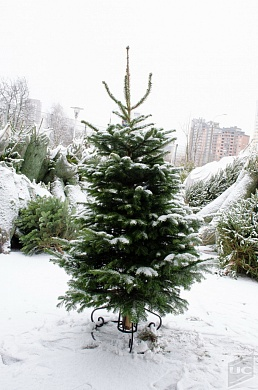
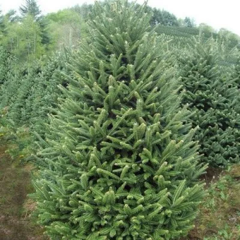

.png)

Виды Живых Ёлок
Живые новогодние деревья бывают нескольких основных видов: пихты, ели и сосны. Рассмотрим каждый из них по подробнее.
Новогодние пихты
Наиболее подходящими для нового года пихтами являются пихты Нордмана и пихты Фразера, причем и так и другая больше известны под обобщенным названием «Датские елки»
Датские елки известны своей пышностью и невероятность красотой, правильной формой, а также, неприхотливостью – они практически не осыпаются и сохраняют свежесть в течение 3-4 недель, что дольше любого другого вида елок. Датские елки насколько хороши, что издалека неподготовленный человек может спутать их с искусственными – насколько у них правильная форма. Иголки у пихт мягкие, скругленные на концах, что делает их полностью безопасными для детей. Наряжать такие елки одно удовольствие, т.к. иголки не колются.
Пихты Нордмана имеют более классическую форму, прямую макушку и имеют утонченный едва уловимый аромат.
Пихты Фразера более кустистые, макушка у них может иметь причудливую форму, зато у дерева приятный хвойно-цитрусовый аромат.
Если вы не стеснены бюджетом, датские елки – ваш выбор.
Новогодняя ель
Новогодняя ель бывает двух видов: ель зеленая и ель голубая. В свою очередь зеленая ель делится на две разновидности: ель обыкновенная, или так называемая русская елка, и ель премиум. Все виды ели довольно сильно осыпаются, через 1-2 недели достаточно незначительных усилий, чтобы дерево полностью потеряло иголки. Иголки у всех видов ели довольно колючие, поэтому во время украшения дерева следует соблюдать осторожность или использовать специальные перчатки.
Голубая ель – экзотическая разновидность, у которой иголки имеют оттенок от явно выраженного голубого, до голубовато-зеленого.
Голубую ель отличает традиционная треугольная форма, среднее количество веток и весьма оригинальный аромат.
Ель зеленая премиум – относится к тому же виду, что и ель зеленая обыкновенная, но имеет невероятно пушистую крону благодаря специальной технологии выращивания (дерево непрерывно подстригают и контролируют форму). Кроме очень пушистой формы, ель зеленая премиум имеет все те же свойства, что и ель обыкновенная
Ель обыкновенная (русская елка) – самый распространённый в России вид, благодаря низкой стоимости и неприхотливости в процессе выращивания. Елка обладает хвойным ароматом, но имеет не так много веток и сильно осыпается. Практически с первых дней с дерева будут падать иголки, а после 1-2 недель и вовсе, теряет все иголки.
Новогодняя сосна
Как и русская елка, новогодняя сосна – традиционный вид новогоднего дерева для России. Сосна имеет довольно специфичную форму, редкие и длинные ветки. Ощущение пышности соснам придают длинные иголки. Сосны имеют хвойный запах и теряют иголки меньше, чем ели, но больше, чем пихты. В определенном смысле, сосны немного непривычны, т.к. их форма в меньшей степени напоминает елку, а из-за редких веток и длинных иголок украшать такие деревья немного проблематично. С другой стороны, некоторым людям нравятся исключительно сосны.